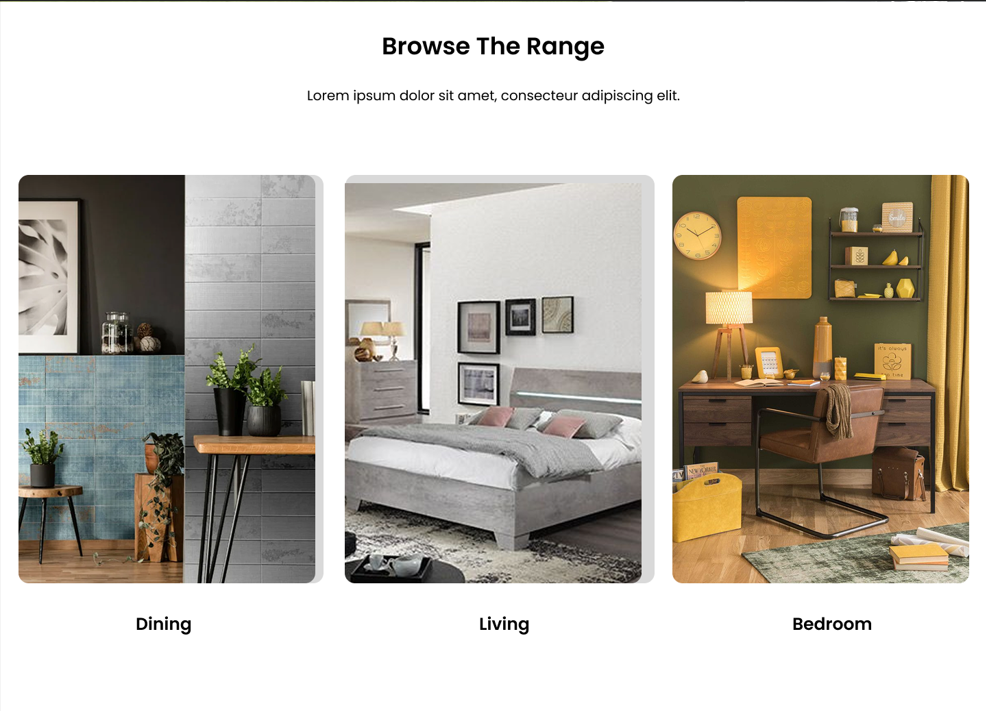
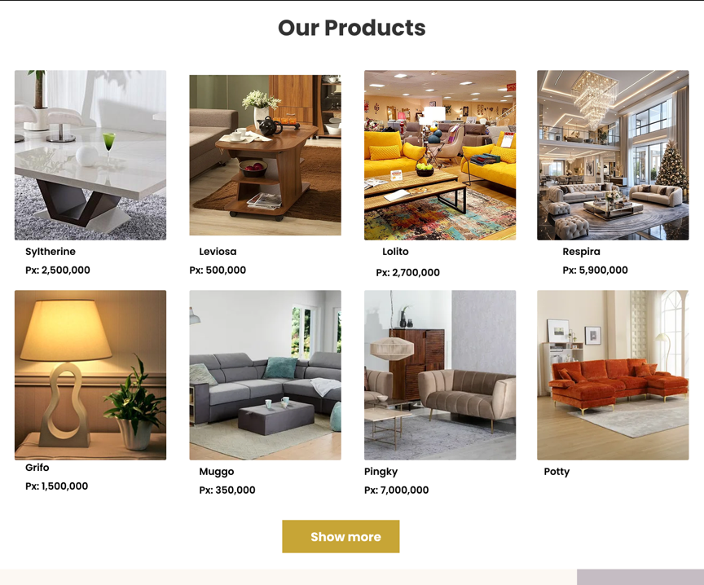

Furniture E-commerce Landing Page

🎯 Objectif
Conception d'une landing page e-commerce pour une marque de mobilier moderne. L'objectif était d'améliorer l'expérience utilisateur (UX) et de maximiser le taux de conversion.
⚠️ Problématique
Les sites de meubles traditionnels ont souvent une navigation complexe, des temps de chargement élevés et des parcours d'achat peu engageants, ce qui augmente le taux de rebond.
💡 Solution & Design Process
J'ai conçu une interface épurée et moderne en suivant ces étapes :
- Recherche & Wireframing : Définition de l'architecture de l'information.
- UI Design : Création d'une hiérarchie visuelle forte avec un hero section impactant et des Call-to-Action (CTA) clairement identifiables.
- Prototypage : Réalisation d'un prototype interactif sur Figma pour tester la fluidité de la navigation.
🛠️ Outils utilisés
Figma, Design System, Prototypage interactif, Principes d'accessibilité (WCAG).
🖼️ Aperçu de l'interface

